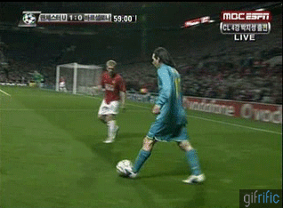
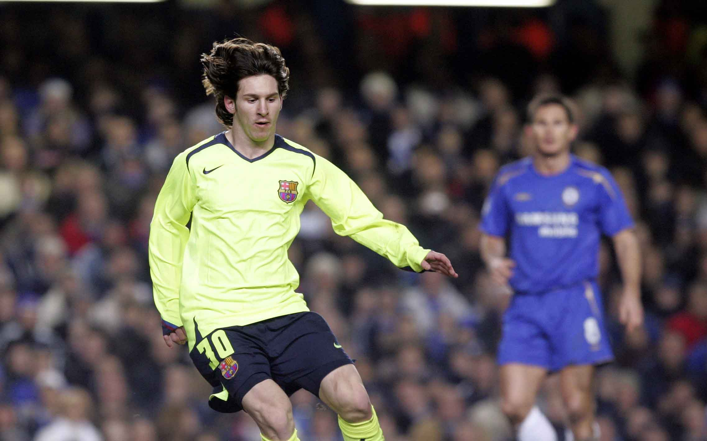
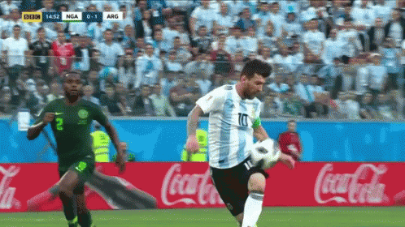
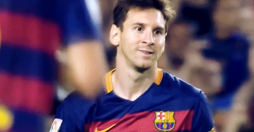
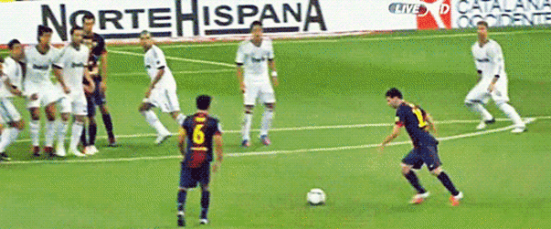
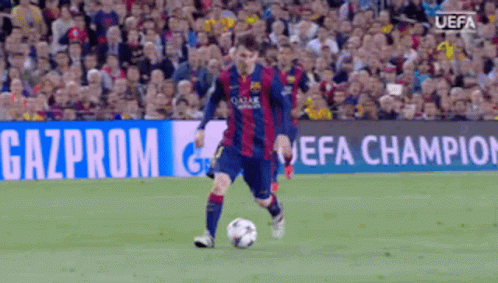
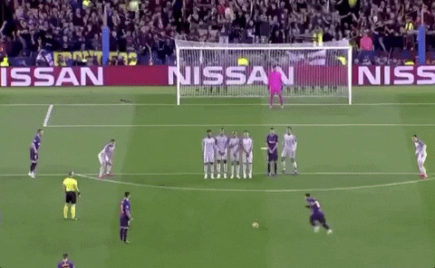

A young Messi debuts in the 2004/2005 season. He had only made 9 appearances this season scoring just one goal against Albacete on
May 1, 2005 which would mark the first of many goals to come for the young GOAT. He also managed to win the LaLiga title that season.
He started with the 30 jersey that would reappear later in his career.

Messi, at 19, becomes a regular starter but was not the best season for him. In all competitions, for club and country, in 50 games, he scored
19 goals and provided 19 assists. He did not manage to win anything at club level with Barcelona that season. He did manage to win the
Olympics with Argentina. Injures were also a problem throughout that season. Barcelona got eliminated from the Champions League by
Manchester United. This would be what inspires the GOAT to get revenge the following season.

In this season, Messi got more game time and started to score more goals. In 46 games, in all competitions for club and country, he scored
21 goals and assisted 5 times. He also competed in his first Copa America in 2007, scoring one goal, but lost against Brazil in the final.
This is also the season where he scored the infamous "Ankara Messi" goal where he dribbled past several Getafe players from halfway to
score. He only won the Supercopa de España that season.

Messi was still not as involved as a starter but did help contribute in games to win the treble. He had won LaLiga, Supercopa de España, and
the UEFA Champions League. This was also the season he did start to break out into the team. Unfortunately, injuries had kept him out of the
remaining matches of the Champions League since the Round of 16. He had a wonderful performance vs Chelsea in the Champions League.

Messi signs for PSG and starts at a new league. Did not have the best season as he only managed to score 21 goals and provide 16 assists in
45 games. Played more deep as he normally did but still did not put up the numbers he normally did. Messi managed to win Ligue 1 with PSG
and the Finalissima with Argentina, winning his second trophy with Argentina.

After a marvelous 2018/2019 season for Messi, Barcelona as a team did not get much better. It was the only season that Messi did not win any
trophy with Barcelona. He still managed to become LaLiga's top scorer. He tried to carry like the season before but the team as a whole was not
good enough. He scored 33 goals and provided 26 assists in 46 games.

Messi had a great season individually scoring 57 goals and providing 18 assists in 57 games. Messi also won the Spanish Supercopa and the
Copa del Rey. He also managed to win his fourth Golden Boot and nominated to win the Balon D'or that year but Ronaldo's amazing season
with Real Madrid winning the Champions League had overshadowed Messi's individual perfomance that season.

Ronaldo wins the Champions League again which overshadowed Messi's season, despite Messi also having a great season only just that trophy
wise it was not the best only winning LaLiga and the Copa del Rey. He actually won his fifth Golden Boot that season. As for the 2018 World
Cup, he crashed out early in the round of 16 vs winners France. Messi scored 52 goals and provided 21 assists in 64 games.

In the 2013/2014 season he did manage to put up a good numbers but fell short with trophies. Only managed to win the Spanish Supercopa.
He got 48 goals and 16 assists in 57 games. This was also the year he helped Argentina get to the World Cup final in 2014, falling short to
Germany. He did win the WC Golden Ball for being the best player at the 2014 World Cup.

Messi had a great season but since he was apart of one of the biggest trio in world football, it was more of Luis Suarez's best seasons as he
picked up the golden boot. He managed to win UEFA SuperCup, Club World Cup, LaLiga, and the Copy del Rey. He managed to score 50
goals and provide 27 assists in 59 games.

Arguably, could have one of Messi best seasons, if not the best season, as he managed to score 69 goals and provide 18 assists in 62 games.
He only managed to win LaLiga that season. Despite the lack of trophies, his individual perfomances were amazing following the season before.
Unfortunately, injuries plagued his season and was not able to score even more goals to possibly break his 73 goal tally the season before and
his 91 goals in a calender year record.

This season would end up being the last season that Messi played for Barcelona. After Suarez's departure, it was up to Messi to lead a squad full of
youngsters to win titles. He still put up numbers as he normally did and only end up winning one trophy that season for Barcelona. the Copa del
Rey. Despite this, he managed to win his first senior trophy for Argentina as he finally ended up winning the 2021 Copa America. Messi had always
been judged by not winning trophies with Argentina but that season he made a statement. Messi was top scorer, top assister, and best player throughout
the tournament. He was expected to continue in Barcelona but due to Barcelona's financial issues and LaLiga's regulations, he could not continue. He
was awarded his 7th Balon D'or in 2021.

This was a much better season with PSG as he managed to score 37 goals and provide 25 assists in 53 games. Despite not scoring, he was more
involved in helping fellow teammate Kylian Mbappe score. The main reason for this season being this high up is because this was the season
where Messi managed to win what he always wanted to for Argentina. In the 2022 World Cup, he carried Argentina to win the World Cup. It
was possibly his last World Cup so he had a mission and accomplished that mission.

After a dominant 2008/2009 season and winning the Balon D'or, Messi had to prove that he can maintain being on that level and he even did better.
In the 2009/2010, he won LaLiga and the Spanish Supercopa. Scoring 47 goals and providing 12 assists in 64 games, he managed to win his second
Balon D'or and win his first Golden Boot. With Argentina, he was not as successful, crashing out to Germany in the quartefinals of the 2010 World
Cup.

Under Pep Guardiola, Messi kept thriving as a false 9, leading the Barcelona side to winning another treble. Even having a 10/10 perfomance in the
final of the Champions League against Man United. This led him to winning his third Balon D'or in 2011. Messi scored 57 goals and provided 27
assists in 66 games. He did fall short in the Copa America 2011 in the quartefinals against Uruguay with Argentina.

Messi became apart of the best trio in football history with Luis Suarez and Neymar Jr. On their first season together, they managed to win another
treble, consisting of the Champions League, LaLiga, and the Copa del Rey. The way Messi was able to connect with the trio in matches shows how
complete Messi is as a player. He scored 62 goals and provided 32 assists in 67 games, in all competitions. Unfortunately, he lost the Copa America
2015 final against Chile with Argentina. Despite that, he managed to pick up his fifth Balon D'or that season.

When Ronaldinho left, Messi was given the 10 jersey and it was up to him to show that he can take over and be as good, if not better, than Ronaldinho
was. In his first season as the 10 of Barcelona, he proved to the best at the club by massively helping Barcelona win the treble, consisting of the Champions
League, LaLiga, and the Copa del Rey. He scored 41 goals and provided 19 assists in 60 games. This is the match where Messi got his revenge on
Manchester United after being eliminated by them the year before.

Literally, the best goalscoring season he has ever had. He set the most goals in a football season in history as well as setting the most goals in a
calender year. Broke previous record holder Gerd Müller's goal tally of 85 goals in a calender year to 91 goals. That season, he scored 82 goals
and provided 34 assists in 69 games for club and country. He managed to win four titles, win his fourth Balon D'or in 2012, and his second Golden
Boot that season. Messi won 4 trophies that season with Barcelona.

Arguably the best version of Messi the world has ever seen. Others may say that the 2011/2012 would be the greatest version of Messi, but I think
that Messi is more of a goalscoring machine. In the 2018/2019 season, it was the biggest carryjob by Messi in all competitions. He provided
chances for his team to score as well as scoring the most goals for Barca. The world class teammates that he had before were gone and he still
managed to carry a average Barcelona side to win LaLiga and the Spanish Supercopa. He also had a great Champions League run carrying Barca
to the semi-finals of the Champions League. He won his sixth Balon D'or in 2019 and sixth Golden Boot that season as well. Messi scored 54 goals
and provided 20 assists in 58 games.